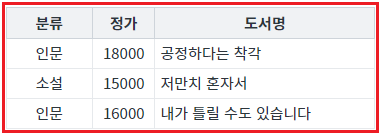
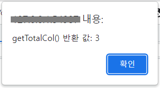

DataList의 컬럼 수를 반환하는 함수 'getTotalCol'의 예시입니다. 함수 'getTotalCol'는 GridView에 구성된 컬럼과는 관련이 없습니다.
DataList의 컬럼 수 반환받기
STEP 1. 초기 상태를 확인합니다.
DataList의 전체 데이터가 GridView에 구성되어 있습니다.
그림 1.브라우저(Chrome) 실행 예시

STEP 2. 버튼 DataList의 컬럼 수 반환받기을 클릭합니다.
STEP 3. 실행 결과를 확인합니다.
DataList의 컬럼 수가 alert으로 표시됩니다.
alert 메시지
getTotalCol() 반환 값: 3
그림 2.브라우저(Chrome) 실행 예시

원하는 시점에 컴포넌트의 함수 'getTotalCol'를 이용하여 스크립트를 작성합니다.
스크립트
// 예제 파일에서는 스크립트 'scwin.btn_exam1_1_onclick'에 작성되어 있습니다. // DataList 'dlt_books'의 컬럼 수를 반환받습니다. let result = dlt_books.getTotalCol() // 반환 값 예시) 3
getTotalCol( )
[웹스퀘어5 SP5 개발 가이드] DataList
링크 : https://docs1.inswave.com/sp5_user_guide/e8b94a03286e4f9f#9954ca390ab74983